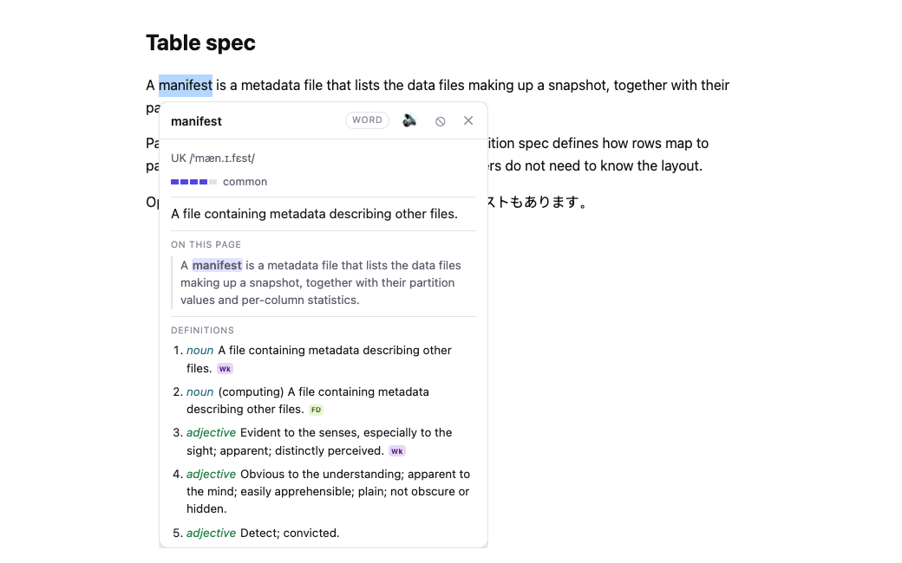
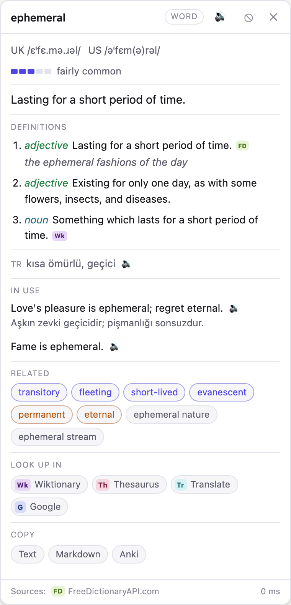
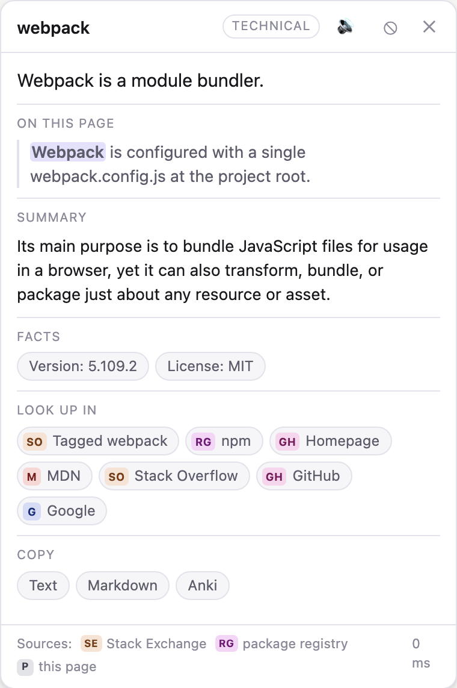
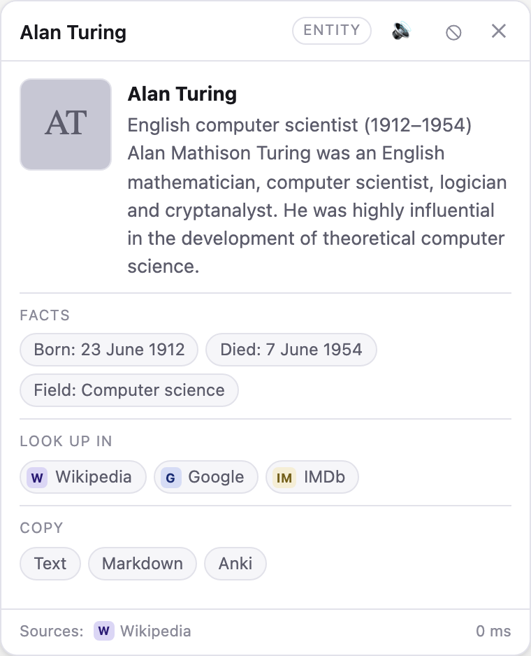

Browser extension · Chrome, Brave, Edge, Firefox · TypeScript · MIT
The answer, where the question was.
Select text on any page and a card opens under it with the most useful answer for that kind of text. An English word gets definitions, pronunciation and related words; a name gets an entity card; a technical term gets the sense that fits the page you are reading. Facts come from data sources, and meanings are ranked against the page locally, with no model.

manifest on a page about table formats is a metadata file, not the everyday adjective. The page is profiled once — title, headings, description — and that profile ranks the senses, so the card leads with the meaning the page uses, and the first source it consults is the page itself: a sentence there that defines the word.
One card per kind of text
Word, phrase, entity, technical term, citation, quantity or foreign text, decided locally in under a millisecond. When the answer is ambiguous it fetches both paths rather than guessing.
Several sources per question
Wiktionary, Wikipedia, Wikidata, Datamuse, Tatoeba, Stack Exchange, package registries, MDN. One failing removes a line, never the card; every meaning links to the page it came from.
Dictionary packs, offline
Install a dictd or StarDict file — FreeDict has about 150 language pairs — and look-ups answer at the speed of local storage, with no daily allowance.
Two words side by side
Drag a card and it stays; the next selection opens beside it. Up to four at once, so two words can be compared on screen.
Keep what you find
Copy a card as text, as Markdown for notes, or as an Anki note, with the sentence you met the word in. Star a look-up and it survives the list's cap and Clear.
Discuss the page, optionally
Right-click a page to ask Claude about it in the side panel, with your own API key or through a local bridge to Claude Code that stores no key in the browser. Off until you set it up.
How it decides what to show
Four steps, all but the sources local to the browser.
- Signals
Token count, casing, script, identifier style, whether the selection is inside code, which software ecosystems the page shows evidence of. Under a millisecond.
- Intent
One of seven kinds. Ambiguity widens the fetch: providers run in parallel and merge, so two paths cost one extra request and give a better card.
- Sources
The page first — a sentence that defines the selection costs no request and sends nothing. Then the data sources for that intent, each with its own failure mode.
- Page context
The page's profile ranks the senses and decides which sources are worth asking: a package registry answers only on a page about that ecosystem.
Install
Not in a store yet: build it and load it unpacked. Needs Node.js.
Build
git clone https://github.com/mmdemirbas/quick-lookup-chrome-ext.git
cd quick-lookup-chrome-ext
npm install
npm run build # dist/chromium
node build.mjs --firefox # dist/firefoxnpm run check runs the type check, the unit tests and the build.
Load
chrome://extensions (or brave://, edge://)
Developer mode: on
Load unpacked: dist/chromium
about:debugging (Firefox)
Load Temporary Add-on: dist/firefoxSettings open from the toolbar popup; the trigger can be changed per site.
Three selections, three cards
Rendered from the real card on canned answers; npm run shots draws them again.



What leaves the browser
- No analytics, no remote code, no account.
- A selection goes only to the source being asked, and only when a look-up was asked for.
- Online translation is off by default; it is the one setting that sends your text somewhere it was not already going, and the card names the service that answered.
- Discussing a page sends the page, so it needs a stored key or the local bridge and a right-click on that page; it never runs on its own. The key is kept on the device, not synced.
- The local bridge listens on 127.0.0.1 only, requires a token, and refuses requests from web pages. Claude Code runs there with every tool that reads, writes or reaches the network switched off.